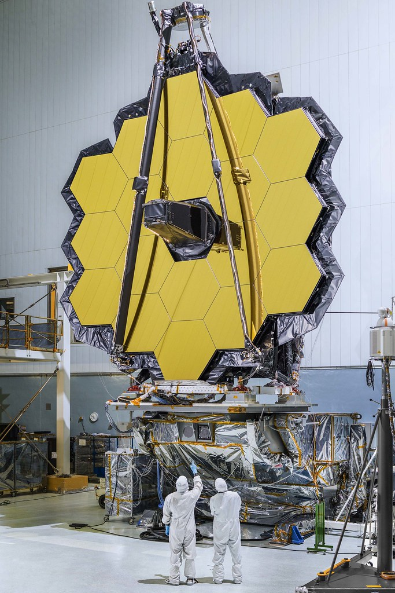

JWST: A brief Summary
Spaceflight will never tolerate carelessness, incapacity, and neglect. Somewhere, somehow, we screwed up. It could have been in design, build, or test. Whatever it was, we should have caught it.
We were too gung ho about the schedule and we locked out all of the problems we saw each day in our work.
“Every element of the program was in trouble and so were we.
The simulators were not working, Mission Control was behind in virtually every area, and the flight and test procedures changed daily.
Nothing we did had any shelf life. Not one of us stood up and said, ‘Dammit, stop!’ I don’t know what Thompson’s committee will find as the cause, but I know what I find.
We are the cause! We were not ready! We did not do our job. We were rolling the dice, hoping that things would come together by launch day, when in our hearts we knew it would take a miracle.
We were pushing the schedule and betting that the Cape would slip before we did.
